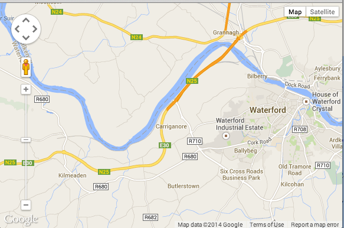
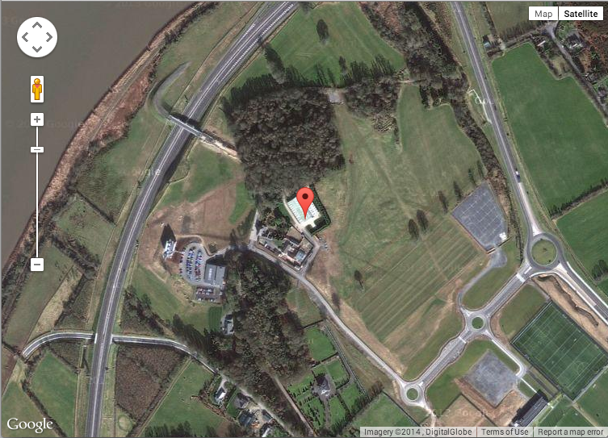

Demonstrate how to embed a map in a web page and add a marker or overlay. Enable the marker so that it may be dragged and dropped. Capture the marker's geolocation and dynamically display this on the webpage.
History
JQuery is a cross-platform JavaScript library developed by John Resig and first released in 2006.
It is now used by in excess of 80% of the 10,000 most visited websites.
Presently it is supported by a team of developers.
The most recent major release (2.1) is dated January 2014.
Some jQuery advantages
jQuery allows one to quickly and easily perform many actions on web page elements. For example:
Some jQuery disadvantages
We shall demonstrate the use of JavaScript and jQuery with a simple example relating to the MyRent application, the subject of one of the ICTSkills Studio (2014) labs.
In the example we shall:
Obtain code from here
Here is the html file in which we have made the following changes:
<!DOCTYPE html>
<html>
<head>
<meta name="viewport" content="initial-scale=1.0, user-scalable=no" />
<style type="text/css">
html { height: 100% }
body { height: 100%; margin: 0; padding: 0 }
#map-canvas { height: 100% }
</style>
<script src="https://maps.googleapis.com/maps/api/js?v=3.exp&sensor=false"></script>
<script type="text/javascript">
function initialize() {
var mapOptions = {
center: new google.maps.LatLng(52.254427, -7.185281),
zoom: 12
};
var map = new google.maps.Map(document.getElementById("map-canvas"),
mapOptions);
}
google.maps.event.addDomListener(window, 'load', initialize);
</script>
</head>
<body>
<div id="map-canvas"/>
</body>
</html>Add to a file, save as inputdata.html and open in a browser.
A map similar to that depicted in Figure 1 should be displayed.

Here is the refactored html:
<!DOCTYPE html>
<html>
<head>
<meta name="viewport" content="initial-scale=1.0, user-scalable=no" />
<style type="text/css">
html { height: 100% }
body { height: 100%; margin: 0; padding: 0 }
#map-canvas { height: 100% }
</style>
</head>
<body>
<div id="map-canvas"/>
<script src="https://maps.googleapis.com/maps/api/js?v=3.exp&sensor=false"></script>
<script src="js/map.js"></script>
</body>
</html>Observe that the external file is named map.js and is located in a folder named js that is placed at the same level as the html file.
File: map.js
function initialize()
{
const mapOptions =
{
center : new google.maps.LatLng(52.254427, -7.185281),
zoom : 12
};
const map = new google.maps.Map(document.getElementById("map-canvas"),
mapOptions);
}
google.maps.event.addDomListener(window, 'load', initialize);A few words of explanation:
In the html file:
<div id="map-canvas"/>map-canvas is the id of the element on the canvas on which the map shall be rendered.
In the script file:
document.getElementById("map-canvas")This is the first argument in the method call google.maps.Map(...) and informs the Google API where the map is to be rendered.
Open inputdata.html in a browser.
In this step we shall make the following changes and additions:
The html file (inputdata.html) remains unchanged.
Here is the refactored map.js:
function initialize()
{
const latlng = new google.maps.LatLng(52.254427, -7.185281);
// place a marker
const marker = new google.maps.Marker({
map : map,
draggable : true,
position : latlng,
title : "Drag and drop on your property!"
});
const mapOptions =
{
center : new google.maps.LatLng(latlng.lat(), latlng.lng()),
mapTypeId : google.maps.MapTypeId.SATELLITE,
zoom : 16
};
const map = new google.maps.Map(document.getElementById("map-canvas"),
mapOptions);
// To add the marker to the map, call setMap();
marker.setMap(map);
}
google.maps.event.addDomListener(window, 'load', initialize);Notice that we have created a LatLng object and used its accessors in the map constructor when creating the mapOptions object:
const latlng = new google.maps.LatLng(52.254427, -7.185281); const mapOptions =
{
center : new google.maps.LatLng(latlng.lat(), latlng.lng()),
mapTypeId : google.maps.MapTypeId.SATELLITE,
zoom : 16
};Open (or refresh) inputdata.html and observe something similar to that shown in Figure 1.

In this step we shall
Add this line to the html at the top of the body:
<input type="text" id="geolocation" value="52.254427, -7.185281" readonly class="input-medium">Note the the value string above is just, at this point, a default placeholder: the following would equally work (omitting value):
<input type="text" id="geolocation" readonly class="input-medium">Add the listener to map.js at the end of the initialize function:
//marker listener populates hidden fields ondragend
google.maps.event.addListener(marker, 'dragend', function() {
const latLng = marker.getPosition();
const latlong = latLng.lat().toString().substring(0,10) + ',' + latLng.lng().toString().substring(0,10);
//publish lat long in geolocation control in html page
$("#geolocation").val(latlong);
//update the new marker position
map.setCenter(latLng);
});The refactored html code is as follows:
<!DOCTYPE html>
<html>
<head>
<meta name="viewport" content="initial-scale=1.0, user-scalable=no" />
<style type="text/css">
html { height: 100% }
body { height: 100%; margin: 0; padding: 0 }
#map-canvas { height: 100% }
</style>
</head>
<body>
<input type="text" id="geolocation" value="53.347298,-6.268344" readonly class="input-medium">
<div id="map-canvas"/>
<script src="https://maps.googleapis.com/maps/api/js?v=3.exp&sensor=false"></script>
<script src="js/jquery-2.2.3.js"></script>
<script src="js/map.js"></script>
</body>
</html>Here is map.js:
function initialize()
{
const latlng = new google.maps.LatLng(52.254427, -7.185281);
// place a marker
const marker = new google.maps.Marker({
map : map,
position : latlng,
title : "Drag and drop on your property!",
draggable : true
});
const mapOptions =
{
center : new google.maps.LatLng(latlng.lat(), latlng.lng()),
mapTypeId : google.maps.MapTypeId.SATELLITE,
zoom : 16
};
const map = new google.maps.Map(document.getElementById("map-canvas"),
mapOptions);
// This adds the marker to the map
marker.setMap(map);
//marker listener populates hidden fields ondragend
google.maps.event.addListener(marker, 'dragend', function() {
const latLng = marker.getPosition();
const latlong = latLng.lat().toString().substring(0,10) + ',' + latLng.lng().toString().substring(0,10);
//publish lat long in geolocation control in html page
$("#geolocation").val(latlong);
//update the new marker position
map.setCenter(latLng);
});
}
google.maps.event.addDomListener(window, 'load', initialize);Observe the line:
$("#geolocation").val(latlong);This is a method call on a jQuery object.
You can obtain a copy of jquery online or from a local archive here
The jQuery object is $("#geolocation").
As an aside (optional), note that you could replace the line:
const map = new google.maps.Map(document.getElementById("map-canvas"), mapOptions);with the line
const map = new google.maps.Map($("#map-canvas").get(0), mapOptions);The latter uses jQuery to obtain the DOM element.
The expression
$("#map-canvas")returns the DOM element but wrapped in a jQuery object. To access the DOM element use the associative array get method with parameter zero since we know only one element returned.
$("#map-canvas").get(0)See here for further information.
When you have refactored the code as described open inputdata.html in a brower and experiment by dragging the marker to various locations.